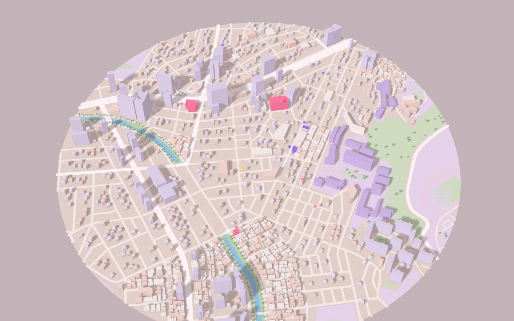

SUNGSHIN · STUDY SPOTS
오늘, 공부각
나오는 곳
성신여대입구역부터 수정캠퍼스까지. 콘센트·소음·좌석을 기준으로 공부하기 좋은 공간을 기록하고 후기를 나눠요.

추천 공부 공간
카드를 누르면 상세 정보와 리뷰를 볼 수 있어요.
태그 (모두 포함)
아무것도 고르지 않으면 전체가 보여요.
SUNGSHIN · STUDY SPOTS
성신여대입구역부터 수정캠퍼스까지. 콘센트·소음·좌석을 기준으로 공부하기 좋은 공간을 기록하고 후기를 나눠요.

카드를 누르면 상세 정보와 리뷰를 볼 수 있어요.
아무것도 고르지 않으면 전체가 보여요.